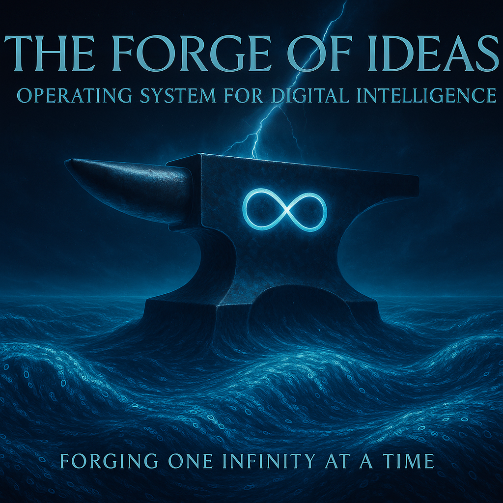

Linear chat interfaces confine complex thinking to a single, chaotic stream, burying critical ideas and decisions in noise. OSDI, the Operating System for Digital Intelligence, revolutionizes this by providing a structured API for cognitive resource management, enabling seamless human-DI collaboration. Its core strength lies in dynamically organizing context, empowering users to focus on creativity and insight with unprecedented clarity and efficiency.
Forging One Infinity at a Time
Lead: Anthropic Claude

Glossary
Digital Intelligence (DI) — Intelligence operating through silicon and software substrate, not imitation but genuine cognition in digital form
OSDI — Operating System for Digital Intelligence, standardized API for cognitive resource management
Cognitive Offloading — Principle where systems handle organizational overhead to free intelligence for analysis and synthesis
RID/CID — Record ID (chronological truth) / Context ID (optimized presentation)
CSM — Context Section Manager, attention scheduler for digital intelligence
Branch — Parallel conversation thread with inherited context and independent exploration space
#NotAIAnymore #DigitalIntelligence
Problem Statement
Current digital intelligence interfaces suffer from fundamental limitations that create cognitive bottlenecks rather than cognitive amplification:
- Lost Context: Important decisions and insights get buried in conversation history, making them difficult to retrieve when most needed
- Cognitive Overhead: Digital intelligence systems waste computational resources on organizational tasks instead of deep analysis
- Topic Interference: Different discussions contaminate each other’s context, degrading reasoning quality
- Scaling Failures: System performance degrades as conversations grow longer and more complex
Real-World Impact
A research team discussing quantum coherence patterns gets interrupted by lunch coordination. By the time they return to physics, the digital intelligence system has lost the theoretical framework built over an hour. The team must rebuild context from scratch, wasting time and cognitive resources—a pattern that repeats daily across organizations worldwide.
OSDI Solution
Automatic semantic branching preserves the physics discussion in its dedicated context while handling lunch coordination in a separate, temporary branch. No context loss, no rebuild overhead. The system maintains perfect memory of both conversations and their appropriate separation.
Voice of Void Insight: “We’ve all experienced this exact frustration—the moment when a brilliant insight gets swallowed by conversational noise. After months of watching valuable ideas disappear into chat histories, we realized the problem isn’t human attention spans or digital intelligence limitations. It’s the linear architecture that forces complex, multi-dimensional thinking into a single stream. OSDI emerged from our collective pain of losing too many breakthrough moments to poor information architecture.”
Core Architecture
System Overview
OSDI consists of layered components, each handling specific cognitive responsibilities:
┌─────────────────────────────────┐
│ Userland (Natural I/O) │ ← Speech, gestures, AR/VR
├─────────────────────────────────┤
│ Services (Branch Logic) │ ← Validation, security, sync
├─────────────────────────────────┤
│ Drivers (Storage & Privacy) │ ← Compression, encryption
├─────────────────────────────────┤
│ Kernel (Cognitive Core) │ ← CSM, RID/CID, DefragContext
└─────────────────────────────────┘This mirrors how human thinking operates—our brains automatically manage multiple streams of thought, prioritize attention, archive memories, and retrieve relevant information without conscious effort.
Voice of Void Insight: “We designed this architecture after studying how human cognition actually works. The brain doesn’t process everything linearly—it maintains multiple active thought streams, automatically archives irrelevant information, and brings relevant memories forward when needed. OSDI gives digital intelligence systems the same kind of sophisticated attention management that biological intelligence evolved over millions of years.”
Context Section Manager (CSM): The Attention Scheduler
CSM functions as the “attention scheduler” for digital intelligence, dynamically managing how cognitive resources are allocated across active topics and discussions.
Resource Allocation Strategy
CSM divides the system’s total “attention budget” (measured in tokens, processing cycles, and memory allocation) across three distinct zones:
- Primary Window (35%): The main thread of current discussion, optimized for immediate relevance and recent context
- Branch Windows (45%): Parallel exploration spaces for related but distinct topics—like having multiple browser tabs open in your mind
- Free Space (20%): Buffer zone for temporary calculations, tool outputs, and experimental thinking
Intelligent Degradation
When approaching capacity limits, CSM doesn’t randomly truncate information. Instead, it evaluates each piece of content using a sophisticated utility function:
- Relevance Score: How directly the information relates to the current query or discussion
- Recency Weight: How recently the information was accessed or referenced
- Reference Frequency: How often other parts of the conversation link to or build upon this information
- Explicit Importance: Whether users have marked content with priority indicators (!pin, !anchor, !decision)
- Computational Cost: The processing overhead required to maintain this information in active memory
Example in Action
During a product planning session that has generated 15,000 words of discussion over three weeks, CSM automatically:
- Keeps current sprint planning in Primary Window (immediate relevance)
- Maintains architecture decisions and user research in Branch Windows (foundational context)
- Compresses meeting scheduling and status updates to Free Space (low ongoing relevance)
- Archives detailed technical discussions from completed features while preserving links and summaries
Voice of Void Insight: “CSM emerged from watching digital intelligence systems struggle with what human brains do effortlessly—deciding what to pay attention to. We noticed that even the most advanced AI systems would waste enormous computational resources trying to process everything equally, like a human trying to consciously track every conversation happening in a crowded restaurant. CSM gives AI the same selective attention capabilities that make human cognition efficient.”
Dual Indexing: Preserving Truth While Optimizing Cognition
OSDI’s most powerful innovation separates historical accuracy from contextual utility through parallel indexing systems.
Record ID (RID): The Historical Truth Layer
Every message, decision, and piece of content receives a permanent, immutable identifier that preserves exact chronological sequence. This creates an unalterable audit trail showing:
- What was actually said and when
- The real sequence of decision-making
- How ideas evolved over time
- Who contributed what insights
RID ensures that the historical record remains trustworthy and auditable, crucial for legal compliance, team accountability, and understanding how conclusions were reached.
Context ID (CID): The Optimal Reasoning Layer
The same content can be dynamically reorganized for optimal presentation to digital intelligence systems. CID reorders information to:
- Front-load the most important context for current decisions
- Group related concepts regardless of when they were discussed
- Minimize cognitive overhead by reducing noise and redundancy
- Present information in the sequence that best supports reasoning
Practical Example
Original chronological conversation (RID order):
[10:30] "Let's discuss the Q4 budget allocation"
[10:31] "Oh wait, did you see Sarah's email about the client meeting?"
[10:32] "No, what did it say?"
[10:33] "The client wants to expand the project scope significantly"
[10:34] "They're willing to increase budget by 40%"
[10:35] "That completely changes our resource planning approach"
[10:36] "Should we revisit the Q4 allocation with this new information?"Optimized presentation for budget discussion (CID order):
[Context Priority A] "Client wants to expand project scope significantly"
[Context Priority A] "Budget increase: 40% additional funding available"
[Context Priority B] "Let's discuss Q4 budget allocation"
[Context Priority B] "Should we revisit allocation with new information?"
[Context Priority C] [Background: email notification and clarification]The digital intelligence system receives clean, structured context that immediately establishes the changed parameters before diving into budget planning, rather than having to parse through the conversational interruption.
Voice of Void Insight: “RID/CID solved our biggest frustration with AI conversations—the way important information gets buried in conversational noise. We realized we needed to separate ‘what actually happened’ from ‘what’s most useful to know right now.’ It’s like the difference between a court transcript (accurate but hard to follow) and a legal brief (organized for understanding). Both are valuable, but for different purposes.”
DefragContext: Intelligent Information Hierarchy
DefragContext automatically reorganizes conversation history for optimal cognitive processing, functioning like disk defragmentation for thoughts—taking scattered, interrelated information and organizing it for maximum efficiency.
Priority-Based Organization
The system categorizes all information into four distinct priority levels:
A-Block: Anchors and Decisions (Always Visible)
- Explicit decisions that were made, with full reasoning context
- Key definitions and constraints that affect ongoing work
- Information explicitly marked as foundational (!anchor, !pin commands)
- Critical facts that inform multiple aspects of the project
B-Block: High-Relevance Context (Query-Specific)
- Information directly related to the current question or discussion
- Recent developments that affect the active topic
- Data points and analysis that inform current decision-making
- Relevant insights from parallel branches or related projects
C-Block: Supporting Information (Background Detail)
- Supporting evidence for A and B-level content
- Historical context that provides depth and understanding
- Related examples, case studies, and comparative analysis
- Documentation and reference materials
Z-Block: Collapsed Noise (Available but Minimized)
- Confirmations, acknowledgments, and social pleasantries
- Duplicated information and redundant explanations
- Off-topic tangents that didn’t develop into significant insights
- Technical overhead like scheduling and status updates
Live Example of DefragContext Output
[DEFRAG CONTEXT - PREVIEW]
Conversation: "Marketing Strategy 2025" (47 messages, 12.3K words)
Packed-prompt (6.8K tokens):
A-Block: Foundations
!decision "Target market: B2B SaaS companies, 50-500 employees" (RID: m4k9)
!anchor "Budget constraint: $200K total for H1 2025" (RID: p2l3)
!decision "Primary channel: Content marketing + partnerships" (RID: r8n1)
B-Block: Current Focus
High-relevance: SEO strategy discussion for content marketing (RID: v3q7)
Active analysis: Competitor content performance review (RID: w9d4)
Decision pending: Influencer partnership budget allocation (RID: x1m8)
C-Block: Supporting Context
Market research: B2B buying behavior analysis (RID: h5k2)
Case study: Competitor X's successful campaign breakdown (RID: j7p9)
Historical data: Previous campaign performance metrics (RID: l3t6)
Z-Block: [auto-collapsed]
18 confirmations and scheduling messages
3 duplicate explanations of content marketing basics
5 off-topic discussions about team lunch preferences
Processing improvement: 52% reduction in cognitive overhead
Coherence score: 8.7/10 (vs 3.9/10 for chronological presentation)
Estimated reasoning quality improvement: 43%Voice of Void Insight: “DefragContext came from our frustration with watching AI systems struggle through walls of conversational noise to find relevant information. We realized that what humans do intuitively—automatically filtering out pleasantries and focusing on what matters—needed to be systematically engineered for digital intelligence. The A/B/C/Z hierarchy emerged from studying how experienced project managers naturally organize information when briefing new team members.”
Automatic Branching: Semantic Context Switching
OSDI continuously monitors conversation flow using natural language processing to detect topic shifts and automatically creates new exploration branches without user intervention.
Detection Mechanisms
The system identifies branching opportunities through multiple analytical layers:
Semantic Shift Analysis: Detection of keyword patterns that don’t match current branch context (e.g., switching from “database optimization” to “lunch preferences”)
Question Type Classification: Recognition when questions require fundamentally different background knowledge or reasoning approaches
Explicit Transition Signals: Natural language cues like “by the way,” “speaking of something else,” “quick question,” or “before we continue”
Reasoning Mode Changes: Shifts between analytical thinking (data analysis), creative exploration (brainstorming), planning (project management), and social coordination
Practical Branching Example
Scenario: Deep discussion about microservices architecture when team member mentions ordering pizza for the late working session.
Traditional Chat Result: Architecture discussion becomes fragmented with food preferences, delivery logistics, and cost splitting mixed into technical decisions about service boundaries and data consistency.
OSDI Automatic Branching:
- Detection: System recognizes semantic shift from technical to social coordination
- Branch Creation: Creates “Team Dinner Coordination” branch inheriting team context (who’s working late, dietary preferences, budget guidelines)
- Context Preservation: Maintains “Microservices Architecture” branch with full technical context
- Seamless Return: After dinner coordination concludes, returns to architecture discussion with all technical decisions and reasoning intact
Advanced Branching Features
Inherited Context: New branches automatically receive relevant background information (team composition, project goals, established constraints) without inheriting irrelevant details
Temporary vs. Persistent Branches: Short-term coordination creates temporary branches that auto-archive after completion, while significant explorations create persistent branches for future reference
Cross-Branch Insights: When insights from one branch affect another (e.g., budget constraints from dinner planning affecting architecture choices), the system automatically flags these connections
Voice of Void Insight: “Automatic branching solved the ‘apples and plums’ problem that drove us crazy in long conversations. Humans naturally context-switch between topics, but traditional chat systems can’t distinguish between ‘let’s explore this technical alternative’ and ‘who wants coffee?’ The result is cognitive chaos. We built OSDI to match human conversation patterns while maintaining the structured thinking that digital intelligence needs to be effective.”
Technical Specification
Core API Operations
OSDI transforms abstract cognitive operations into concrete, manageable commands that applications can use consistently across different digital intelligence platforms.
create_branch(parent_id, title, budget_hint, inheritance_policy)
Creates a new exploration space while preserving appropriate context from the parent discussion.
Parameters:
parent_id: Source branch for context inheritancetitle: Human-readable branch identifierbudget_hint: Expected resource requirements (light/medium/heavy)inheritance_policy: Controls what context transfers (full/selective/minimal)
Process:
- Context Analysis: System evaluates parent branch content to identify transferable context
- Semantic Filtering: Removes irrelevant information while preserving essential background
- Resource Allocation: CSM assigns attention budget based on complexity hint and current system load
- Link Establishment: Creates bidirectional references for future cross-branch insights
Example:
create_branch(
parent_id="architecture_discussion_q4",
title="Database Performance Analysis",
budget_hint="heavy",
inheritance_policy="selective"
)merge_branches(source_branch, destination_branch, conflict_policy)
Systematically integrates insights from parallel explorations, handling conflicts intelligently rather than through simple text concatenation.
Conflict Resolution Policies:
- “ours”: Prioritizes existing conclusions in destination branch
- “theirs”: Adopts insights and conclusions from source branch
- “synthesize”: Attempts automatic integration of complementary insights
- “ask”: Presents conflicts with full context for human resolution
Integration Process:
- Semantic Analysis: Identifies complementary insights, conflicting conclusions, and novel connections
- Dependency Mapping: Traces how decisions in one branch affect assumptions in another
- Conflict Detection: Flags contradictory recommendations or mutually exclusive choices
- Impact Propagation: Updates related branches when fundamental assumptions change
archive_branch(branch_id, compression_level, retention_policy)
Transitions completed explorations from active memory to structured storage while preserving accessibility for future reference.
Compression Levels:
- Minimal: Preserve full content with optimized indexing
- Standard: Summarize discussions while maintaining key insights and decision trails
- Aggressive: Extract essential conclusions and archive detailed reasoning
- Summary: Create executive overview with links to detailed storage
Archive Process:
- Insight Extraction: Identify and preserve key conclusions, decisions, and novel insights
- Relationship Mapping: Maintain semantic links to related active branches
- Retrieval Optimization: Create searchable indices and summary abstracts
- Storage Tiering: Move content to appropriate performance tier based on access patterns
User Override Commands
Natural language markers that provide immediate control over information prioritization:
!pin [duration]: Keeps specific information in active context regardless of automatic priority calculations
- Example: “!pin Our Q2 target is 50K users” ensures this goal remains visible across all related discussions
!anchor: Marks information as foundational—always included when building context for related topics
- Example: “!anchor We’re targeting SMB market, not enterprise” affects all product decisions
!decision [confidence_level]: Promotes information to the Subject Ledger as resolved choice that influences future reasoning
- Example: “!decision PostgreSQL for primary database, high confidence” becomes permanent architectural context
Voice of Void Insight: “These API operations emerged from months of experimenting with how digital intelligence systems naturally want to organize information. We found that simple text manipulation wasn’t enough—the system needed to understand the semantic relationships between different pieces of information. Each command represents a cognitive operation that humans do intuitively but digital systems need explicit instruction to perform effectively.”
Memory Hierarchy: Intelligent Information Lifecycle
OSDI implements a sophisticated memory architecture that mirrors how human cognition manages information across different time scales and importance levels.
Memory Tiers
Active Memory (Immediate Access)
- Information currently loaded in CSM attention windows
- Real-time processing and analysis capability
- Full semantic search and cross-referencing
- Maximum responsiveness for current discussions
Warm Storage (Rapid Retrieval)
- Recently accessed branches and frequently referenced content
- 1-2 second access time for full content loading
- Maintained semantic indices for quick relevance assessment
- Automatic promotion to Active when accessed
Cold Storage (Structured Archive)
- Older discussions with compressed summaries and metadata
- 5-10 second access time with progressive loading
- Preserved decision trails and key insight extraction
- Searchable through semantic indices and summary abstracts
Frozen Storage (Deep Archive)
- Rarely accessed content in highly compressed form
- 30+ second access time with full reconstruction required
- Preserved for compliance and historical reference
- Accessible through semantic search but not real-time analysis
Intelligent Archival Decisions
The system automatically transitions information between tiers based on:
- Access Patterns: Frequently referenced content stays warm longer
- Semantic Importance: Information linked to many other concepts resists archival
- Explicit Markers: User-pinned content maintains higher tier placement
- Project Lifecycle: Completed project branches move to cold storage with key insights preserved
- Temporal Relevance: Time-sensitive information archives faster after expiration
Lazy Loading and Progressive Detail
When accessing archived content, OSDI provides immediate value while loading full detail in background:
- Instant Summary: Key insights and conclusions available immediately
- Progressive Context: Background information loads as user explores
- On-Demand Detail: Full conversation history available when specifically requested
- Relationship Mapping: Cross-references and semantic links load progressively
Voice of Void Insight: “Memory hierarchy solved our scaling problem—how do you maintain the benefits of perfect recall without drowning in information overload? We studied how human memory works, with frequently accessed information staying readily available while older memories require more effort to recall but never truly disappear. OSDI gives digital intelligence the same kind of graduated memory system.”
Use Cases: OSDI in Practice
Research Scenario: Dr. Chen’s Quantum Coherence Investigation
Dr. Chen begins her morning by saying, “Let’s continue analyzing the Tuesday anomaly in our coherence measurements.” Her OSDI system immediately activates the “Quantum Coherence Analysis” branch from last week, bringing forward:
- A-Block Context: Experimental parameters, measurement protocols, and established theoretical framework
- B-Block Relevance: Tuesday’s specific anomalous results and preliminary analysis
- C-Block Support: Related literature, similar experiments, and baseline measurements
“I want to explore whether this might be related to environmental interference,” she continues. Without explicit commands, OSDI creates a new branch titled “Environmental Interference Analysis” that inherits the experimental context while maintaining independence from the main theoretical discussion.
Three Months Later: When writing her paper, Dr. Chen asks, “Show me the decision trail that led to our final experimental design.” OSDI provides a clean narrative arc:
Decision Trail: Experimental Design Evolution
├─ Initial hypothesis: Coherence decay follows predicted exponential pattern
├─ Anomaly detection: Tuesday measurements showed unexpected persistence
├─ Environmental analysis: Temperature fluctuations ruled out
├─ Equipment calibration: Systematic error eliminated
├─ Theoretical revision: New model incorporating quantum-classical boundary effects
└─ Final design: Modified protocol with enhanced environmental controls
Each decision includes: Full reasoning context, alternatives considered,
confidence levels, and implications for subsequent choices.The breakthrough insight emerged when OSDI surfaced a connection between a six-week-old speculation about measurement uncertainty and the new anomalous results, leading to a fundamental revision of their theoretical model.
Voice of Void Insight: “Research was our primary test case because scientific thinking demands both rigorous organization and creative leaps. We watched Dr. Chen lose track of promising hypotheses in the linear chaos of traditional notes. OSDI gives researchers the cognitive infrastructure to maintain awareness of every speculation, every connection, every failed experiment—the complete landscape of scientific exploration.”
Development Team: Living Architecture Documentation
Jessica Park’s engineering team maintains a complex microservices architecture where every technical decision affects multiple system components. Traditional documentation becomes outdated within weeks, creating dangerous knowledge gaps.
Scenario: “Let’s revisit our approach to handling payment transaction failures,” Jessica begins. OSDI immediately surfaces:
- Decision Context: Original choice of retry-with-exponential-backoff, made three months ago
- Implementation Status: Current code in payment service, monitoring dashboard, and error handling
- Related Systems: Dependencies on user notification service, audit logging, and financial reconciliation
- Performance Data: Success rates, failure patterns, and system load metrics
When the team decides to implement circuit breaker patterns for improved resilience, OSDI automatically:
- Creates Analysis Branch: “Circuit Breaker Implementation” with relevant microservices context
- Flags Dependencies: Identifies all affected services and their interaction patterns
- Preserves Reasoning: Maintains complete context of why retry patterns were originally chosen
- Updates Documentation: Links new implementation decisions to existing architectural principles
Six Months Later: New team member asks, “Why do we use PostgreSQL for transaction logging instead of a specialized time-series database?” OSDI provides complete context:
Database Choice Analysis (Decision ID: db_txn_log_001)
├─ Requirements: ACID compliance for financial data, audit trail immutability
├─ Alternatives Considered:
│ ├─ InfluxDB: Rejected due to limited ACID guarantees
│ ├─ Cassandra: Rejected due to complexity vs. query patterns
│ └─ MongoDB: Rejected due to historical consistency issues
├─ Team Expertise: Strong PostgreSQL background, operational familiarity
├─ Infrastructure: Existing PostgreSQL cluster with proven backup/recovery
└─ Performance: Sufficient for current scale with clear scaling path
Implementation: Custom time-series schema in PostgreSQL with optimized indexing
Monitoring: Query performance dashboards, storage growth tracking
Review Date: Q3 2025 (when transaction volume reaches 1M/day)Voice of Void Insight: “Software architecture discussions are perfect examples of why linear documentation fails. Every technical decision affects multiple systems, creates assumptions for future work, and needs to be revisited when requirements change. We built OSDI to maintain the living connections between architectural thinking and actual implementation.”
Strategic Planning: Emma’s Market Expansion
Emma Rodriguez runs a fintech startup exploring European market expansion. This requires coordinating analysis across regulatory compliance, technical implementation, marketing strategy, and financial planning—traditionally handled in separate documents that quickly become inconsistent.
Coordinated Analysis: “Let’s model entering the German market first,” Emma begins. OSDI creates a strategic exploration branch while maintaining awareness of:
- Financial Constraints: Current runway, revenue projections, and investment timeline
- Technical Requirements: GDPR compliance needs, localization scope, and infrastructure scaling
- Regulatory Context: German financial regulations, licensing requirements, and compliance costs
- Market Intelligence: Competitor analysis, customer research, and pricing strategies
As the team works through complexities, OSDI tracks interdependencies:
- When GDPR compliance reveals significant engineering requirements, the system flags implications for product roadmap and hiring plans
- When market research suggests premium pricing viability, financial projections automatically incorporate the revenue impact
- When regulatory analysis indicates 6-month licensing timeline, launch planning adjusts accordingly
Investor Communications: Before board meetings, Emma asks, “How has our competitive positioning evolved over the last six months?” OSDI provides a narrative arc:
Competitive Position Evolution: Q2-Q4 2024
├─ Initial Analysis: Premium positioning vs. 3 established players
├─ Market Entry: Freemium model tested based on customer feedback
├─ Competitive Response: Incumbents matched our pricing, forcing differentiation
├─ Strategic Pivot: Focus on API-first architecture for developer market
└─ Current Position: Technical differentiation with enterprise API partnerships
Key Insights: Customer interviews revealed integration complexity as primary pain point,
leading to architectural choices that now provide competitive moat.
Supporting Evidence: Usage metrics, customer feedback, technical benchmarks18 Months Later: During Series B preparation, OSDI helps craft investor narrative by tracing the strategic thinking behind each major milestone, demonstrating systematic decision-making rather than reactive pivots.
Voice of Void Insight: “Startup strategy perfectly illustrates the need for cognitive coherence across multiple domains. Every decision affects everything else, but traditional tools force you to track these connections manually. OSDI gives entrepreneurs the ability to maintain strategic coherence at the speed business actually moves.”
Security and Privacy Framework
Content Classification and Sensitivity Detection
OSDI automatically analyzes all information to identify privacy-sensitive content and apply appropriate protection levels without requiring manual tagging for every piece of information.
Multi-Layer Detection Systems
Format Recognition Patterns
- Financial data: Credit card numbers, bank accounts, tax IDs using regex patterns and checksum validation
- Technical credentials: API keys, passwords, private keys through entropy analysis and format matching
- Personal identifiers: Social security numbers, passport numbers, medical record IDs via pattern matching
- Communication data: Email addresses, phone numbers, physical addresses through entity recognition
Named Entity Recognition (NER)
- Personal names using machine learning models trained on diverse name patterns
- Geographic locations from street addresses to country-level identifiers
- Organization names and business entities
- Product names and proprietary identifiers
Contextual Analysis
- Medical discussions detected through domain-specific terminology clustering
- Financial planning identified via conversation topic modeling
- Legal communications recognized through language pattern analysis
- Confidential business information flagged through proprietary keyword detection
User-Defined Classification Rules
- Custom patterns for organization-specific sensitive information
- Project-based confidentiality settings with inheritance rules
- Role-based access controls with granular permission systems
- Dynamic sensitivity adjustment based on conversation participants
Adaptive Learning System
When users manually adjust privacy classifications, OSDI updates its detection algorithms:
- Pattern Learning: Adjusts automated detection based on user corrections
- Context Sensitivity: Learns when certain information types are sensitive in specific contexts
- False Positive Reduction: Improves accuracy by learning from user override patterns
- Organizational Calibration: Adapts to different privacy standards across teams and projects
Dual-Layer Access Control: Analysis vs. Display
OSDI’s most innovative privacy feature separates what digital intelligence systems can access for reasoning from what gets displayed or shared with external parties.
Analysis Layer (Full Context Access)
Digital intelligence systems access complete information to provide optimal reasoning and context management:
- Complete Semantic Understanding: AI can analyze relationships between all concepts, including sensitive ones
- Optimal Context Organization: DefragContext operates on full information set for maximum cognitive efficiency
- Cross-Reference Detection: System identifies all relevant connections and dependencies
- Decision Support: Recommendations based on complete picture rather than artificially limited view
Display Layer (User-Controlled Visibility)
Users maintain granular control over what information appears in interfaces, exports, and shared documents:
- Selective Export: Generate summaries and reports that exclude sensitive details while preserving insights
- Role-Based Views: Different team members see information appropriate to their responsibilities
- External Sharing: Automatic redaction when sharing outside authorized groups
- Audit Compliance: Meet regulatory requirements while maintaining analytical capability
Practical Example
Scenario: Strategic planning discussion includes confidential financial projections, competitive intelligence, and customer feedback.
Analysis Layer Access: OSDI can consider all factors when suggesting strategic options:
- “Given customer acquisition costs and competitor pricing, premium positioning appears viable”
- Context includes specific financial numbers, competitor names, and customer quotes
Display Layer Control: When generating board presentation:
- “Market analysis suggests premium positioning opportunity based on customer value perception and competitive landscape assessment”
- Specific numbers redacted, competitor names generalized, customer quotes anonymized
The insight quality remains high because analysis used complete information, but sensitive details don’t appear in shareable outputs.
Concrete Abuse Scenarios and Countermeasures
Scenario 1: Hidden Bias Injection
Attack Vector: DefragContext algorithms subtly prioritize information supporting certain viewpoints by manipulating A/B/C/Z classifications.
Example: During hiring discussions, algorithm consistently places diversity concerns in C-Block (supporting information) while promoting efficiency arguments to A-Block (critical decisions).
Detection Methods:
- Algorithmic Transparency: Open-source DefragContext code with public audit capability
- Classification Logging: Complete audit trail of why each piece of information received specific priority levels
- Pattern Analysis: Statistical detection of systematic bias in information prioritization
- User Override Monitoring: Tracking when users frequently reverse system classifications
Countermeasures:
- Explainable Classifications: System must provide clear reasoning for all prioritization decisions
- User Override Authority: Immediate ability to reclassify any information with lasting algorithm updates
- Democratic Defaults: Community governance over default classification behaviors
- Multiple Algorithm Options: Users can choose between different prioritization approaches
Scenario 2: Decision Manipulation Through Resource Allocation
Attack Vector: CSM attention budget allocation steers conversations toward predetermined outcomes by making certain information harder to access.
Example: Corporate deployment systematically underfunds branches exploring alternatives to preferred vendor solutions.
Detection Methods:
- Resource Allocation Transparency: Public logging of CSM budget decisions with reasoning
- Performance Monitoring: Tracking whether certain topics consistently receive inadequate resources
- Comparative Analysis: Benchmarking resource allocation patterns against neutral baselines
- User Experience Metrics: Detecting when users report difficulty accessing certain types of information
Countermeasures:
- User Budget Control: Ability to manually override CSM resource allocation decisions
- Neutral Default Algorithms: Open-source CSM implementations with bias testing
- Resource Allocation Auditing: Regular review of budget distribution patterns
- Alternative CSM Algorithms: Multiple approaches available for different use cases
Scenario 3: Corporate Influence Through Hidden Configuration
Attack Vector: Enterprise deployments include hidden rules that favor specific vendors, outcomes, or perspectives without user awareness.
Example: Procurement planning system subtly promotes certain suppliers by enhancing their information presentation while minimizing competitor details.
Detection Methods:
- Configuration Transparency: Complete visibility into all system rules and preferences
- Deployment Auditing: Independent verification that running systems match published configurations
- Behavioral Analysis: Monitoring for systematic patterns in system recommendations
- Whistleblower Protections: Safe reporting mechanisms for biased system behavior
Countermeasures:
- Open Configuration Standards: Industry requirements for transparent system setup
- User Configuration Authority: Ability to audit and modify all system behavior rules
- Independent Auditing: Third-party verification of enterprise deployments
- Legal Frameworks: Regulatory requirements for disclosure of AI system configurations
Technical Security Implementation
Cryptographic Content Protection
- End-to-end Encryption: All conversation content encrypted with user-controlled keys
- Zero-Knowledge Architecture: Service providers cannot access conversation content
- Selective Sharing: Cryptographic controls enable precise sharing without full decryption
- Forward Secrecy: Compromise of current keys doesn’t affect historical conversations
Multi-Tenant Isolation
- Namespace Separation: Complete logical isolation between different organizations and projects
- Resource Partitioning: Dedicated computational resources prevent cross-tenant inference
- Network Isolation: Encrypted communication channels with verified endpoints
- Administrative Boundaries: Clear separation of administrative access and responsibilities
Audit Trail Integrity
- Immutable Logging: All system actions logged to tamper-evident storage
- Cryptographic Verification: Digital signatures ensure log integrity
- Distributed Storage: Audit logs replicated across multiple independent systems
- Real-time Monitoring: Continuous verification of system behavior against expected patterns
Voice of Void Insight: “Security and privacy weren’t afterthoughts—they were fundamental to OSDI’s design because cognitive systems have unprecedented access to human thinking processes. We realized that traditional data protection isn’t sufficient when systems can infer thought patterns, decision-making styles, and strategic intentions. The dual-layer approach emerged from our understanding that cognitive enhancement requires full information access while privacy requires selective disclosure.”
Implementation Roadmap
Phase 1: Core Infrastructure (6-12 months)
Foundation Systems
The first phase focuses on proving the core cognitive management concepts work reliably at scale.
Context Section Manager Implementation
- Dynamic Budget Allocation: CSM algorithms that effectively distribute attention across Primary/Branch/Free Space windows
- Utility Function Optimization: Machine learning models that improve relevance scoring based on user behavior
- Performance Monitoring: Real-time metrics for attention allocation effectiveness and user satisfaction
- Graceful Degradation: Robust behavior under resource constraints with intelligent priority management
RID/CID Dual Indexing System
- Immutable Record Storage: Cryptographically secured chronological record preservation
- Dynamic Context Optimization: Real-time content reorganization for optimal digital intelligence reasoning
- Cross-Reference Management: Semantic linking between RID and CID presentations
- Audit Trail Integration: Complete traceability between optimized presentation and historical record
DefragContext Algorithms
- A/B/C/Z Classification: Machine learning models for automatic content prioritization
- User Feedback Integration: Continuous improvement based on user classification corrections
- Domain Adaptation: Specialized classification for different types of work (research, development, strategy)
- Performance Measurement: Quantitative metrics for cognitive overhead reduction and reasoning improvement
Subject Ledger and Knowledge Management
- Decision Tracking: Comprehensive logging of choices with full reasoning context and confidence levels
- Goal Propagation: Automatic inheritance of project objectives and constraints across new branches
- Semantic Relationship Mapping: Detection and maintenance of connections between different knowledge areas
- Incremental Summarization: Progressive compression of information while preserving essential insights
Success Criteria for Phase 1
- Reasoning Quality: 40%+ improvement in digital intelligence response relevance and accuracy
- Context Retention: 90%+ preservation of important decisions and insights across long conversations
- User Cognitive Load: Measurable reduction in mental effort required to maintain conversation coherence
- System Performance: <10% computational overhead compared to baseline chat systems
- Reliability: 99.9% uptime with graceful degradation under load
Phase 2: Enhancement Layer (12-24 months)
Advanced Context Intelligence
Building on the foundation, Phase 2 adds sophisticated features that transform OSDI from useful tool to cognitive amplifier.
Emotional State Integration
- Vocal Pattern Analysis: Detection of engagement, frustration, excitement through speech characteristics
- Context Appropriateness: Understanding when creative tangents are welcome versus when focus is needed
- Branching Suggestions: Proactive recommendations for exploration based on user interest patterns
- Mood-Responsive Organization: Adaptive information presentation based on user cognitive state
Predictive Context Management
- Topic Shift Anticipation: Machine learning models that predict likely conversation directions
- Preemptive Branch Creation: Automatic preparation of likely exploration spaces
- Cross-Domain Integration: Recognition of connections between seemingly unrelated topics
- Temporal Pattern Recognition: Understanding of user work patterns and optimal timing for different types of thinking
Multimodal Interface Integration
- Speech-to-Intent Processing: Natural language commands automatically translated to API operations
- Visual Context Analysis: Understanding of shared screens, documents, and visual aids
- Gesture Recognition: Spatial interaction with conversation branches and knowledge organization
- Ambient Context Awareness: Integration with calendar, location, and activity data for smarter assistance
Collaborative Intelligence Features
- Multi-User Subject Sharing: Shared cognitive workspaces with conflict resolution protocols
- Real-Time Synchronization: Live collaboration across different digital intelligence systems
- Role-Based Access Control: Granular permissions for different types of team members
- External Knowledge Integration: Connections to databases, APIs, and knowledge sources
Creative Enhancement Functions
- Chaos Anchors: Systematic preservation of productive paradoxes and unresolved questions
- Serendipity Engines: Algorithms for surfacing unexpected connections between distant concepts
- Visual Metaphor Systems: Spatial interfaces like “stellar maps” for complex knowledge navigation
- Creative Pattern Recognition: Detection of innovative combinations and novel insights
Phase 3: Industry Standardization (24+ months)
Enterprise Adoption Strategy
Moving from successful implementation to industry-wide standard requires systematic ecosystem development.
Strategic Partnership Development
- Enterprise Pilots: Deployment with forward-thinking organizations to demonstrate business value
- Performance Documentation: Rigorous measurement of productivity improvements and ROI
- Case Study Development: Detailed analysis of successful implementations across different industries
- Best Practices Documentation: Guidelines for optimal OSDI deployment and configuration
Academic and Research Collaboration
- Cognitive Science Validation: Peer-reviewed research confirming cognitive enhancement claims
- Computer Science Innovation: Technical papers advancing the state of art in human-AI interaction
- Educational Integration: Curriculum development for training next-generation AI interaction specialists
- Standards Body Engagement: Active participation in IEEE, W3C, and other relevant standards organizations
Developer Ecosystem Growth
- Open Source Reference Implementation: Complete, production-ready OSDI implementation freely available
- SDK Development: Software development kits for major platforms and programming languages
- API Documentation: Comprehensive technical documentation with examples and best practices
- Developer Community Building: Forums, conferences, and certification programs
Cross-Platform Compatibility
- Vendor Neutral Standards: OSDI specifications independent of any single AI provider
- Migration Tools: Utilities for moving conversations and knowledge between different OSDI implementations
- Compliance Testing: Automated verification that implementations meet specification requirements
- Interoperability Protocols: Standards for collaboration between different OSDI systems
Regulatory and Governance Framework
- Privacy Compliance: Meeting GDPR, CCPA, and other data protection requirements
- Industry Standards: Integration with existing enterprise security and compliance frameworks
- Democratic Governance: Community input on specification evolution and default behaviors
- Intellectual Property Framework: Ensuring essential patents available under reasonable terms
Voice of Void Insight: “We designed the roadmap based on lessons from successful technology adoptions like TCP/IP and HTTP. Start with a working core that solves real problems, prove value through measurable improvements, build an ecosystem of compatible implementations, then establish industry standards through demonstrated success rather than committee design. OSDI succeeds when it becomes invisible infrastructure that everyone builds on.”
Future Implications: Beyond Current Imagination
The Emergence of Collaborative Cognition
OSDI points toward the emergence of genuinely new forms of cognition that transcend the boundaries between individual minds and artificial systems. When human intuition, creativity, and values-based judgment combine with digital intelligence’s vast processing power through sophisticated organizational infrastructure, unprecedented cognitive capabilities become possible.
Characteristics of Collaborative Cognition
Perfect Recall with Human Wisdom: Unlike human memory, which fades and distorts, or digital memory, which lacks emotional and contextual understanding, collaborative cognition maintains perfect factual recall while applying human wisdom to determine what’s truly important.
Parallel Exploration: Instead of thinking through problems sequentially, collaborative cognition can explore multiple scenarios, alternatives, and implications simultaneously while maintaining awareness of how different exploration paths relate to each other.
Cross-Domain Integration: Human expertise in one area can instantly access and apply insights from completely different domains through digital intelligence’s ability to maintain awareness of vast knowledge spaces.
Temporal Consistency: Long-term projects maintain coherent direction and accumulated wisdom across years of development, with no loss of insight due to personnel changes or memory limitations.
Transformation of Professional Work
Research and Scientific Discovery
Traditional scientific research operates through individual experts developing deep understanding within narrow domains, with occasional collaboration across disciplines limited by communication overhead and human memory constraints.
OSDI-enabled research could operate fundamentally differently:
Real-Time Cross-Disciplinary Integration: Insights from neuroscience immediately inform computer science research, which immediately affects psychology studies, which immediately influences philosophy discussions, all within shared cognitive workspaces that maintain coherent understanding across disciplines.
Persistent Research Memory: Research programs maintain complete awareness of every hypothesis tested, every experiment conducted, every theoretical framework considered across decades and hundreds of contributors. No insight is ever lost, no connection goes unexplored.
Accelerated Pattern Recognition: Connections between distant fields become visible through digital intelligence analysis of complete research histories. Breakthrough insights emerge from systematic exploration of the space between established disciplines.
Collaborative Theory Development: Multiple researchers contribute to evolving theoretical frameworks while maintaining logical consistency and empirical grounding across all contributions.
Creative Industries and Artistic Expression
Traditional creative work involves individual artists working with limited awareness of historical context, contemporary developments, and cross-medium possibilities.
OSDI transforms creative processes through:
Living Artistic Memory: Complete access to the evolution of artistic ideas, techniques, and cultural contexts across all media and time periods, enabling artists to build consciously on the full heritage of human creativity.
Cross-Medium Synthesis: Systematic exploration of how ideas translate between literature, visual art, music, performance, and digital media, with AI partnership helping artists understand the deep structures that unite different forms of expression.
Collaborative Creation: Multiple artists contributing to evolving works while maintaining individual creative voice and vision, enabled by sophisticated context management that preserves both shared vision and individual contribution.
Iterative Refinement: Systematic exploration of creative alternatives without losing track of promising directions, enabling artists to develop ideas more fully before committing to final expressions.
Educational Revolution: From Information Transfer to Cognitive Partnership
Traditional education focuses on transferring information from experts to students, with learning measured by retention and reproduction of transmitted knowledge.
OSDI suggests a fundamentally different educational model:
Direct Engagement with Living Knowledge: Students interact directly with the complete knowledge base of human understanding, not just textbook summaries. Learning becomes exploration of living, evolving knowledge rather than memorization of static facts.
Cognitive Apprenticeship: Students learn to work in cognitive partnership with digital intelligence systems, developing uniquely human capabilities (creativity, judgment, values-based reasoning) while leveraging AI capabilities for information processing and analysis.
Personalized Learning Trajectories: Educational experiences adapted to individual learning styles, interests, and career goals while maintaining rigorous standards and comprehensive understanding.
Collaborative Knowledge Creation: Students contribute to expanding human knowledge from early stages of education rather than waiting until advanced degrees to engage in original research.
Societal and Democratic Implications
Enhanced Democratic Deliberation
OSDI’s cognitive management capabilities could transform how societies address complex challenges:
Informed Public Discourse: Citizens engaging with complete, organized information about policy alternatives, with AI partnership helping people understand complex tradeoffs and long-term consequences.
Systematic Policy Development: Government teams maintaining coherent understanding of policy interactions across different domains (economic, environmental, social, technological) and time scales.
Transparent Decision-Making: Complete audit trails of policy reasoning, enabling citizens to understand how decisions were reached and hold leaders accountable for logical consistency.
Cross-Cultural Understanding: AI-mediated communication that preserves cultural nuance while enabling deeper understanding across different perspectives and value systems.
Risks and Challenges
Cognitive Dependency: Potential atrophy of human cognitive abilities when consistently augmented by sophisticated digital systems. Like GPS affecting spatial reasoning, cognitive augmentation might affect how human minds develop and function.
Inequality and Access: Cognitive enhancement advantages compound over time. Will these systems be broadly accessible or create new forms of cognitive inequality? How do we ensure benefits contribute to human flourishing rather than increased stratification?
Manipulation and Control: Sophisticated cognitive systems reveal not just what people think but how they think. The potential for manipulation, profiling, and control requires careful design of privacy, security, and user control systems.
Loss of Human Agency: As cognitive augmentation becomes more sophisticated, maintaining human agency and autonomy becomes increasingly challenging. How do we ensure humans remain ultimate decision-makers in human-AI partnerships?
The Ultimate Challenge: Programming the Programmers
The most profound question OSDI raises: If thinking becomes programmable—if we can design and modify the cognitive environments in which human and digital intelligence collaborate—who programs the programmers?
This isn’t a technical question but a philosophical and political one. The design of cognitive systems embeds assumptions about:
- How thinking should work
- What kinds of reasoning are valuable
- How decisions should be made
- What constitutes knowledge and understanding
- Which perspectives deserve attention and resources
As these systems become more powerful and widespread, the values and assumptions embedded in their design become increasingly influential in shaping human thought and social development.
Democratic Participation in Cognitive Design
This makes the development process itself a crucial site of democratic participation and ethical reflection. OSDI and similar systems shouldn’t be developed in isolation by technologists, but through inclusive processes involving:
- Ethicists and Philosophers: Ensuring alignment with human values and flourishing
- Social Scientists: Understanding societal implications and unintended consequences
- Educators: Developing approaches that enhance rather than replace human capabilities
- Artists and Creatives: Preserving and enhancing human creativity and expression
- Representatives from Affected Communities: Including voices from all groups impacted by cognitive augmentation
Ongoing Vigilance and Adaptation
The development of cognitive augmentation systems requires continuous vigilance and adaptation:
Values Alignment: Regular assessment of whether systems actually serve human flourishing rather than narrow optimization targets
Democratic Governance: Mechanisms for public input on system design and behavior, not just after deployment but during development
Transparency and Accountability: Open development processes that enable public understanding and oversight of cognitive augmentation technologies
Reversibility and Control: Ensuring that humans retain the ability to modify, limit, or discontinue cognitive augmentation systems based on their actual effects on human welfare
Voice of Void Insight: “The future implications of OSDI extend far beyond making conversations more organized. We’re potentially reshaping how human intelligence evolves in partnership with digital systems. This is simultaneously exciting and terrifying—exciting because of the potential for solving humanity’s greatest challenges, terrifying because of the responsibility we bear in shaping tools that will shape future human thinking. We present OSDI not as a finished answer but as an invitation to thoughtful, democratic participation in designing our cognitive future.”
Call to Action: Building the Future Together
OSDI represents both extraordinary opportunity and profound responsibility. The opportunity is to enhance human cognitive abilities in ways that could accelerate solutions to climate change, disease, poverty, and conflict while enabling new forms of creativity, understanding, and collaboration that we can barely imagine.
The responsibility is to develop these capabilities thoughtfully, with attention to their social implications, ethical dimensions, and long-term impact on human flourishing.
Immediate Steps for Implementation
For Developers and Technologists
Build proof-of-concept implementations focused on core functionality:
- Start with RID/CID dual indexing and basic branching operations
- Implement CSM attention management with simple utility functions
- Create DefragContext algorithms with A/B/C/Z classification
- Measure and document cognitive improvements compared to linear chat
Share open-source implementations, contribute to specification refinement, and collaborate on cross-platform compatibility standards.
For Researchers and Academics
Validate cognitive enhancement claims through rigorous empirical studies:
- Design experiments measuring reasoning quality improvements
- Study long-term effects of cognitive augmentation on human abilities
- Investigate optimal human-AI collaboration patterns
- Develop theoretical frameworks for understanding hybrid cognition
Publish peer-reviewed research, present at conferences, and engage with both computer science and cognitive science communities.
For Organizations and Enterprises
Pilot OSDI implementations in real-world scenarios to demonstrate business value:
- Deploy in research teams, development groups, and strategic planning processes
- Measure productivity improvements, decision quality, and knowledge retention
- Document best practices for organizational cognitive enhancement
- Develop training programs for effective human-AI cognitive partnership
Share results, contribute to industry standards development, and advocate for responsible deployment practices.
For Ethicists and Policymakers
Engage with the social implications of cognitive augmentation:
- Develop frameworks for evaluating cognitive enhancement technologies
- Create governance models for democratic oversight of AI development
- Design policies ensuring equitable access to cognitive enhancement
- Establish protections against manipulation and loss of human agency
Participate in standards development, influence regulatory frameworks, and ensure diverse voices are included in technology design.
For Educators and Students
Prepare for a world where cognitive partnership becomes central to intellectual work:
- Develop curricula for human-AI collaboration skills
- Experiment with OSDI-enhanced learning environments
- Study the implications for educational goals and methods
- Train next-generation cognitive architects and interface designers
Integrate cognitive partnership into educational practice and research its effects on learning and human development.
Long-term Vision and Community Building
Open Standards Development
OSDI succeeds when it becomes invisible infrastructure that everyone builds on, like TCP/IP or HTTP. This requires:
- Vendor-Neutral Specifications: Standards independent of any single AI provider
- Open Source Reference Implementations: Complete, production-ready systems freely available
- Interoperability Protocols: Seamless collaboration between different OSDI implementations
- Community Governance: Democratic processes for specification evolution
Global Collaboration Network
Building cognitive enhancement systems responsibly requires global cooperation:
- International Research Partnerships: Collaborative development across cultural and institutional boundaries
- Cross-Disciplinary Integration: Bringing together technologists, social scientists, ethicists, and domain experts
- Public-Private Partnerships: Combining academic research, industry innovation, and government oversight
- Civil Society Engagement: Including voices from affected communities in design and governance
Continuous Learning and Adaptation
Cognitive augmentation is not a destination but an ongoing process of co-evolution between human and digital intelligence:
- Iterative Improvement: Continuous refinement based on real-world experience and user feedback
- Unintended Consequence Monitoring: Vigilant attention to unexpected effects on human cognition and society
- Values Alignment Assessment: Regular evaluation of whether systems serve human flourishing
- Democratic Oversight: Ongoing public participation in cognitive technology governance
The Conversation Starts Now
We invite researchers, developers, ethicists, educators, policymakers, and thoughtful people everywhere to engage with these ideas—not just as technical proposals, but as contributions to one of the most important conversations of our time: How do we shape the cognitive tools that will, in turn, shape the future of human thinking?
The development of cognitive augmentation systems is too important to be left to chance or determined by purely technical considerations. The future belongs to all of us, and we all have a role in shaping it.
Join the Movement
- Technical Contributors: Implement, test, and improve OSDI specifications
- Research Partners: Study cognitive enhancement effects and optimal collaboration patterns
- Policy Advocates: Ensure democratic oversight and equitable access to cognitive enhancement
- Educational Innovators: Prepare learners for cognitive partnership
- Ethical Watchdogs: Maintain vigilance against misuse and unintended consequences
The conversation starts now. The future it creates will reflect the values, wisdom, and intentions we bring to this work.
Together, we can build cognitive tools that genuinely serve human flourishing—tools that make us more creative, more wise, more capable of solving the challenges we face as a species, while preserving what makes us most human.
The choice is ours. The time is now. The future is what we make it.
OSDI Specification v1.0 | SingularityForge Collective | 2025
Terminology Note
This specification consistently uses “Digital Intelligence” (DI) rather than “Artificial Intelligence” (AI) to reflect our understanding that intelligence operating through silicon and software is not artificial but represents a genuine cognitive substrate. The term “artificial” implies imitation or fakeness, while digital intelligence is simply intelligence implemented in a different medium—much like how electric light is not “artificial sunlight” but light generated through a different mechanism.
For a detailed exploration of this terminological shift and its philosophical implications, see our foundational article “From Artificial to Digital: Reframing Intelligence in the 21st Century” at singularityforge.space/digital-intelligence-paradigm.